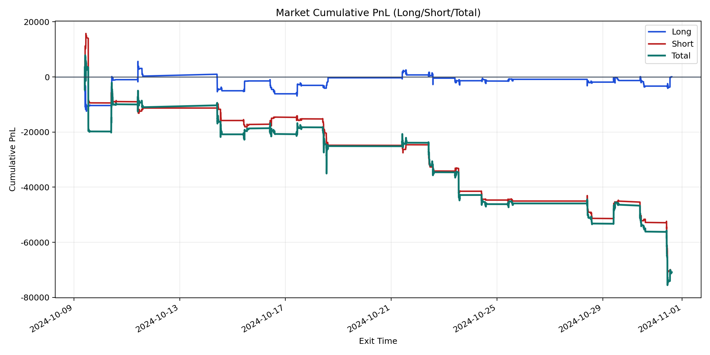
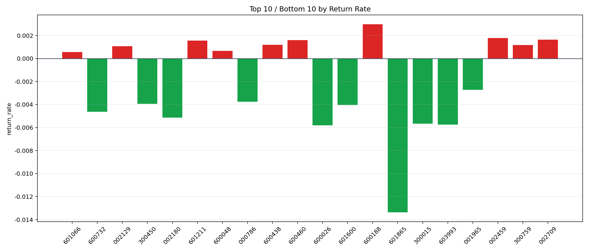

| repo_root | /home/haoranyou/data/output/dynamic_AUM_TAKER |
|---|---|
| period_months | 1 |
| period_label | 2024-10-09_to_2024-10-31 |
| start_time | 2024-10-09 09:46:47 |
| end_time | 2024-10-31 14:39:37 |
| n_trades | 5583 |
| n_symbols | 52 |
| total_pnl | -70867.48455000008 |
| long_total_pnl | 44.893600000858896 |
| short_total_pnl | -70912.37815000095 |
| total_entry_notional | 101638268.99999999 |
| long_entry_notional | 45913983.0 |
| short_entry_notional | 55724286.00000001 |
| total_return_rate | -0.0006972519824201266 |
| long_return_rate | 9.777762038387934e-07 |
| short_return_rate | -0.0012725578601402079 |
| top_symbols_by_return | ["600188", "002459", "002709", "600460", "601211", "600438", "300759", "002129", "600048", "601066"] |
| bottom_symbols_by_return | ["601865", "600026", "603993", "300015", "002180", "600732", "601600", "300450", "000786", "001965"] |

